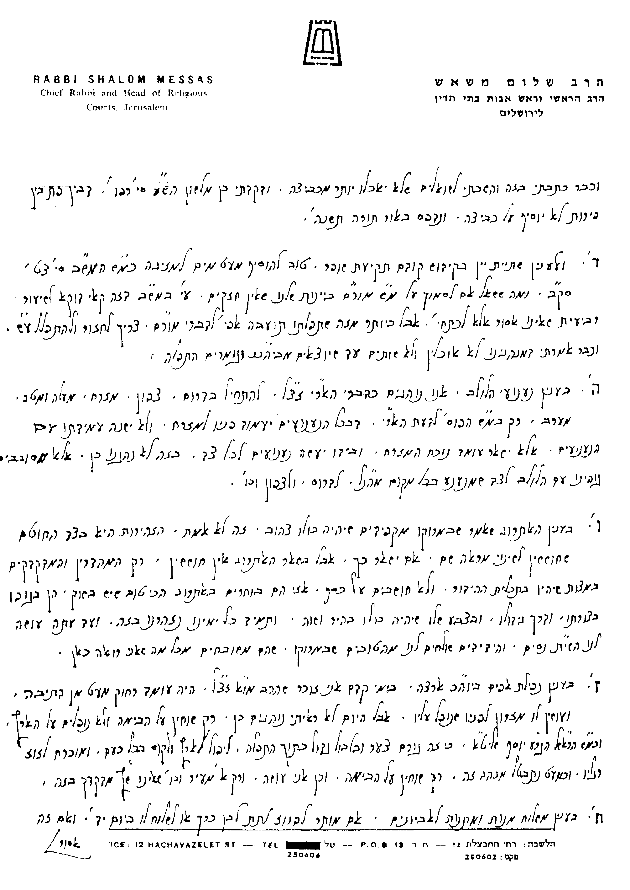

(מתוך ספרנו מקראי קודש - הלכות יום הכיפורים, נספח י"ב)
בס"ד תמוז תשנ"ו
לכבוד הרב הגדול, מעוז ומגדול, סיני ועוקר הרים וטוחנן זב"ז,
הג"ר שלום משאש שליט"א
הראב"ד והרב הראשי פעיה"ק ירושת"ו.
מצטער אני שמשלוח המכתב התעכב כיון שחליתי, ומתוך שחשתי לכבוד תורתו שליט"א שזרזני לשלוח המכתב, אזרתי חלצי וכתבתיו בעודי חולה ל"ע. וזה החלי בעזר צורי וגואלי:
בענין ראש השנה והסליחות:
א. 1) היש מקום להקל לבחורי ישיבה (בפרט ספרדים, שמתחילים כבר מר"ח אלול) לא לומר סליחות כל יום, אם גורם להם הדבר ביטול תורה למחרת, או שבכל אופן צריכים הם לעשות מנין לסליחות מיד לאחר חצות, או ללכת לישון מוקדם יותר ולהשכים ו לומר סליחות בהשכמה (ראה ע"כ ביביע אומר ח"ב סי' כ"ח ס"ק ח'-ט', וביחוה דעת ח"ג סי' מ"ד).
2) כנ"ל, היש להקל גם למלמדי תורה לתינוקות של בית רבן, ואף לשאר שכירים, שלא יהיו עייפים למחרת ויעשו מלאכתם רמיה (עפ"י הנ"ל).
ב. 1) המותר לקדש ולאכול בין קריאת התורה לבין תקיעת השופר ברה"ש. אם שרי, האם דוקא מזונות או אפי' פת, וזאת כדי שתתיישב דעתו בתפילת מוסף (עפ"י השו"ע סי' תרנ"ב סעי' י"ב והנו"כ).
2) כנ"ל, עד איזה שיעור שרי, האם עד כביצה, שלוש ביצים או שיעור אחר.
3) כיצד יש לנהוג בקידוש זה לגבי שתיית היין, האם לשתות דוקא שיעור שבין רוב רביעית לבין רביעית, כדי שלא יהיה לו דין שתוי (עפ"י המ"ב סי' צ"ט סקי"ז, שכתב שאין נכון לשתות רביעית גם האידנא), או שיש להקל בזה עפ"י מש"כ הרמ"א (סי' צ"ט ס"ג) שמתפללים מתוך המחזורים.
בענין סוכות:
ג. מהו מנהג יוצאי מרוקו בסדר אגידת הלולב, האם כספרדים (והיינו כאריז"ל), כאשכנזים, או בסדר אחר (עפ"י שו"ע סי' תרנ"א והנו"כ שם).
ד. הנכון הדבר שיוצאי מרוקו מקפידים שהאתרוג יהא כולו צהוב אפי' בלא שום כתם ירוק (עפ"י שו"ע סי' תרמ"ח סעי' כ"א).
בענין יום הכיפורים:
ה. מהו מנהג יוצאי מרוקו לגבי הש"ץ בסדר העבודה במוסף, כיצד נופל הוא על אפיו. האם נופל הוא על הבימה, או ששמים עמוד מעץ מלפניו ובהגיע זמן נפילת אפיים מוציאים את העמוד מלפניו והוא נופל אפיים ארצה ככל הציבור, או שנוהגים הם שהש"ץ כלל אינו נופל אפיים [הדעות הנ"ל הובאו בשו"ת הריב"ש (סי' של"ב), ברמ"א בד"מ ובשו"ע (סי' תרכ"א ס"ד), בט"ז במ"ב וכה"ח שם. ובמחזור חזון עובדיה ליוה"כ ובילקוט יוסף - מועדים (עמ' ק"י) כתב שנופלים ע"ג התיבה וע"ע בספרנו מקראי קודש (יו"כ פרק י"א סעיף י')].
בענין פורים:
ו. 1) המותר לפרוז לתת מתנות לאביונים ביום י"ד באדר לעני בן כרך (שיתכן והעני יאכל זאת לפני יום ט"ו שהוא פורים שלו) והמועיל לומר לו שמקנה לו את המתנות לאביונים רק ביום ט"ו (ראה כה"ח סי' תרפ"ח סקנ"ד, סי' תרצ"ד ס"ק ט"ו וי"ח, וסי' תרצ"ה סק"נ).
2) ההיפך - המותר לבן כרך לשלוח מתנות לאביונים לעני פרוז ביום ט"ו (שהעני כבר לא יכול לאכול זאת בסעודת פורים שלו ביום י"ד).
ז. עד כאן בענין מתנות לאביונים. ואילו לענין משלוח מנות: המותר לפרוז לשלוח מנות ביום י"ד לבן כרך וכן המותר לבן כרך לשלוח מנות ביום י"ד או ט"ו לפרוז, ולצאת בזה י"ח.
בענין פסח:
ח. כיצד יש להכשיר כלי פלסטיק חמץ שיהיו כשרים לפסח אם השתמשו בהם לחמץ קר או חם (כגון בעירוי דיסה מכלי ראשון לצלחת פלסטיק). האם דינם כבולעו כן פולטו או כמו שי"א שדינם ככלי חרס. ואם אי אפשר להכשירם, מה הדין בדיעבד אם שמו בהם אוכל, כשר לפסח שהינו חם.
בענין יום טוב ושבת:
ט. בענין מחלו' האחרו' אי צריך להוסיף בתפילת העמידה תיבות "אלקינו ואלקי אבותינו, רצה נא במנוחתנו" כשיו"ט חל בשבת שמדברי הגאונים והראשונים מבואר שאין להוסיף תוספת זו [עפ"י סידור רב סעדיה גאון, הובא בסידור רב עמרם גאון השלם. וכן הנוסח ברמב"ם (סדר התפילה סוף חלק אהבה, בתפילות רה"ש. והגר"א נבנצל שליט"א העיר גם כאן: אין זה מהרמב"ם. עכ"ל. ור' ע"כ לקמן בנספח י"א ענף 1), במנהיג (הל' רה"ש סי' כ"ג), בחיבור התשובה למאירי (עמ' רס"ד), ובאבודרהם. שאע"פ שכתבו תוספות אחרות לשבת, זאת לא כתבו. ואמנם הלבוש חידש שיש להוסיף זאת (הב"ד כה"ח סי' תפ"ז סקל"ד וסי' תקפ"ב סקמ"ח), וטעמו שהם לא השמיטו זאת בדוקא אלא דלא נחתו לדקדק בזה. וכ"כ גם המ"א, מחה"ש, המט"א והמ"ב (סי' תקפ"ב סק"כ). אך אחרו' רבים כתבו שאין להוסיף כן [מהם הגר"א (במעשה רב סי' קס"ט), וכן הזכיר זאת המט"א (סי' תקפ"ב סקי"ז), וכ"כ המהרי"ט אלגזי בשלמי חגיגה (דף ש"ז), מחזור אהלי יעקב, הג"ר בצמ"ח עוזיאל (בשו"ת משפטי עוזיאל סי' ע"א), הנתיבי עם (סי' תקפ"ב) ועוד. ראה כל זה ביבי"א (ח"א סי' ל"ח)]. לאור זאת, מה מנהג יוצאי מרוקו בענין זה, ומדוע.
י. בענין הדלקת גפרורים ביו"ט. הנכון שבמרוקו נהגו להדליקם ביו"ט עפ"י הכרם חמר ומצור דבש והאם לדינא מותר הדבר או לפחות שרי להקל בשעת הדחק (כגון שכבה הגז ואין אש אחרת). ולפחות אם הדליקו ובישלו, המותר לאכול התבשיל.
יא. הדלקת חשמל ביו"ט, האם מותרת, ולפחות ביו"ט שני, או ע"י קטן ביו"ט ראשון. והיינו מדינא.
בברכת התורה מהררי ציון
מ. הררי
ירושת"ו



* רוב הפוסקים חלקו על פסק זה ואוסרים זאת. וראה שו"ת מנחת שלמה (מהדו"ק. חלק א' דס"ט, הערה 5), ושו"ת מנחת אשר (ח"א עמ' ק"ה-ק"ז) שכתבו שיש פוס' שטעו בהבנת מהות החשמל.